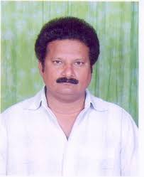

Name: R. Ashok
Designation: Librarian
Qualification: M L I Sc., M.phil., M.A., PGD LAN., B.Sc.(Hon)
Email: library@mvsrec.edu.in
Facilities Available
E-Journal Subscribing: ASCE, ASME, IEEE, J-GATE, DELNET, INFLIBNET, Member of N D L
NPTEL Lectures of all B.E. & Management Courses.
Central Library
also has a good number of highly qualified professional staff and they have computer and allied technical skills which they acquired by getting in service training, attending conferences and seminars on information technology.
Staff particulars:
|
Name | Designation | Qualifications |
| R. Ashok | Librarian | M.L.I.Sc., M.Phil.,M.A., PGD LAN. |
| G. Vijaya Kumar | Asst. Librarian | M.A., M.L.I.Sc. |
| D.Veena Joshi | Library Asst. | M.A., M.L.I.Sc. |
| P. Venu Madhav | Library Asst. | M. A., M.L.I.Sc. |
| T. Anuradha | Book Bearer | M.L.I.Sc. |
| Raj Kumar | Book Bearer | M.A., M.L.I.Sc. |
| P.Sravanthi | Tech. Asst. | D.C.C.P.(B.Com) |
| P.V.S. Anjaneyulu | Record Asst. | B.A. |
| C.Vasu | Attender | - |
| M.Krishna | Attender | SSC |
| P.Kameshwaramma | Helper | SSC |
Reference Section
In this section, we have displayed 9,333 number of textbooks and related reference books required for the semester courses for all engineering disciplines for consulting within the reference section. These books are not issued to the readers for borrowing.
It is maintained by well - versed and fully qualified staff. They are fully conversant with the holdings of the section and also they are fully acquainted with the reference materials available in the reference section. They guide the readers to find out the requisite materials and they also provide requisite information efficiently.
The staff of the reference section having always sympathetic attitude towards the reader and they try to provide Right Book to Right Reader in Right Time.
Periodical Section
Bulk of primary source literature appears in the form of periodicals. The periodicals articles is the means of communication for the exchange of Scientific and Technical. Information contains in periodicals is almost invariably more up to date than that appearing in books. Periodicals usually reports the result of recent research more quickly than books. Information on new processes and discoveries can appear in a periodical with in week of their formulation. We observe that much of the materials reported in a periodicals is never published in books. Therefore we maintain back volumes of periodicals.
Selection of periodicals for technical institution is a challenging job for the teachers and librarian, because there is need to concentrate on current and latest technical developments in the field of science and technology and it has to brought to the notice of students and staff. Therefore we consider the recommendations of teacher, head of the department and students for selection of periodicals. The subscription for periodicals we paid annually in advance.
Audiovisual Library
This is an additional facility which is providing for our college students. We have a large stack of C Ds and other audiovisuals for both in - house and in - home use.
Library Automation
Library Software :
Smart Campus - Library 2.1of Idenizen Smartware Pvt. Ltd., Bangalore
The Library is computerized and computerized services are providing to its readers. It is fully equipped with necessary infrastructure, manpower to provide improved Library services to the users.
Borrowing Facility
Students:
For every bonafide student of the college is given Four books and One CD will be issued for the period of 15 days.
Staff:
Ten books will be given for a period of one semester.
Reservations
You can reserve any books maximum of two per reader. Books that have been reserved by other readers are lent for one week only.
Renewals / Overdue charges
You have to come personally to renew the books. They can be renewed for once only. Book having reservation cannot be renewed. CD's will not be extended.
An overdue charges at the rate of Rs. 1/- per book / CD will be levied per day for the late return after the due date.
Loss of Books / Materials & Mutilation
To be reported immediately. The reader is expected to check any damages before he/she loans the items, otherwise a payment will be levied for the item returned in damaged condition.
Book Bank for SC and ST Students
BOOK BANK: For the benefit of S C & S T students under Integrated Scheme of Social welfare, the college has acquired over 10, 050 volumes of books.
Handing over ISSW Books to the beneficiaries:
As per G.O Ms No.123 dated 28. 07. 1994 of Social Welfare Department of Hyderabad District Page No. 04 Paragraph No. VI
"The Sets of books which are purchased and kept in the Book Bank shall be given to the SC / ST Students permanently after expiry of life period of 03 year in respect of each book"
Professional Training
Training program is being offered for Library professionals throughout the year. After successful completion of training a certificate will be given.
Duration:
Three months, during college working hours
Fee:
Free of cost
Eligibility:
Working candidates / fresh Library Science Professional
Qualifications:
Minimum of B.Li.Sc.,
Further details please mail to: library@mvsrec.edu.in
Professional Memberships
Through the center we are sharing going e-journals, e-learning and e-books on online.
Delnet:
Developing Library Network:
It provides the delivery of individual books as and when required by Member - Libraries and Photo copies of journal articles that are published in India and foreign journals through its Inter Library Loan / Document Delivery Services
I D C:
Information Dissemination Centre:
It is a consortium of technical journals. It provides ASCE, ASME, ACM, IEL, IEE and other foreign journals articles to Member Libraries as and when required.
British Council Library:
Books and journals which are not available in our Library are borrowed from this Library for the benefit of our college students.